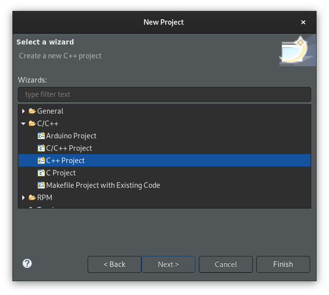
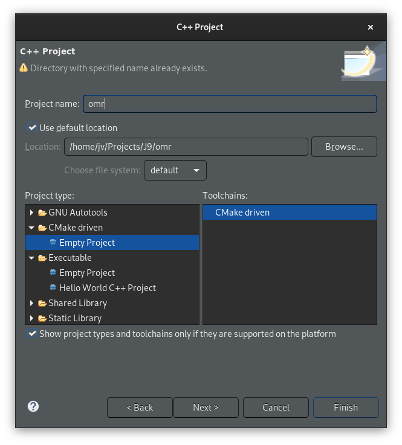
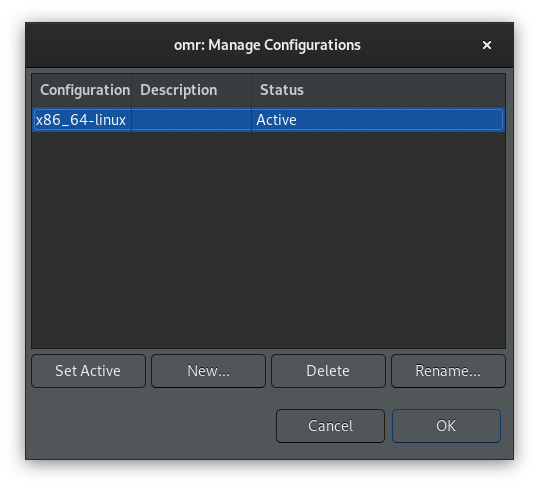
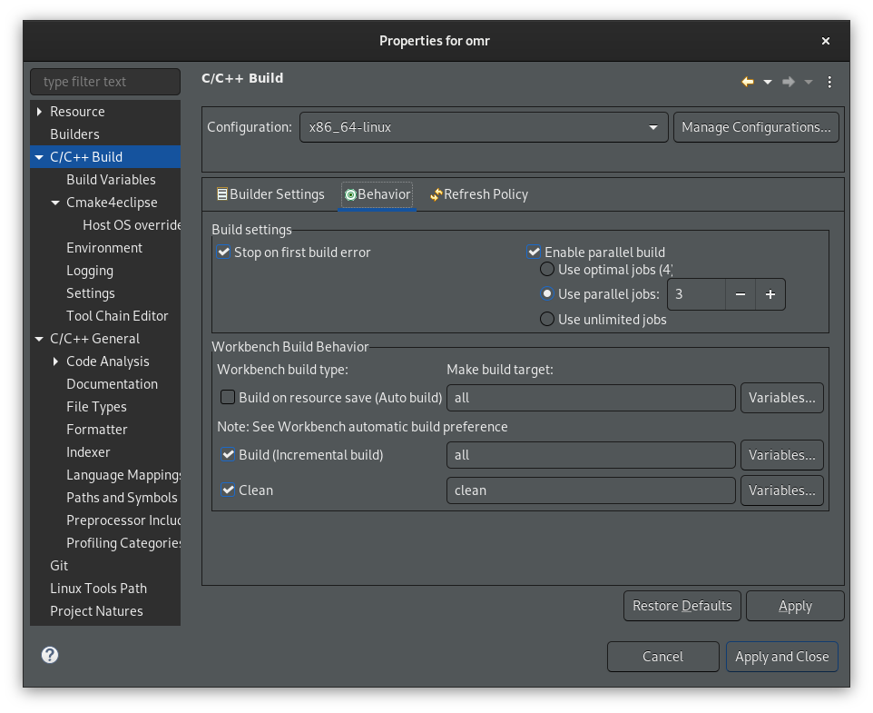
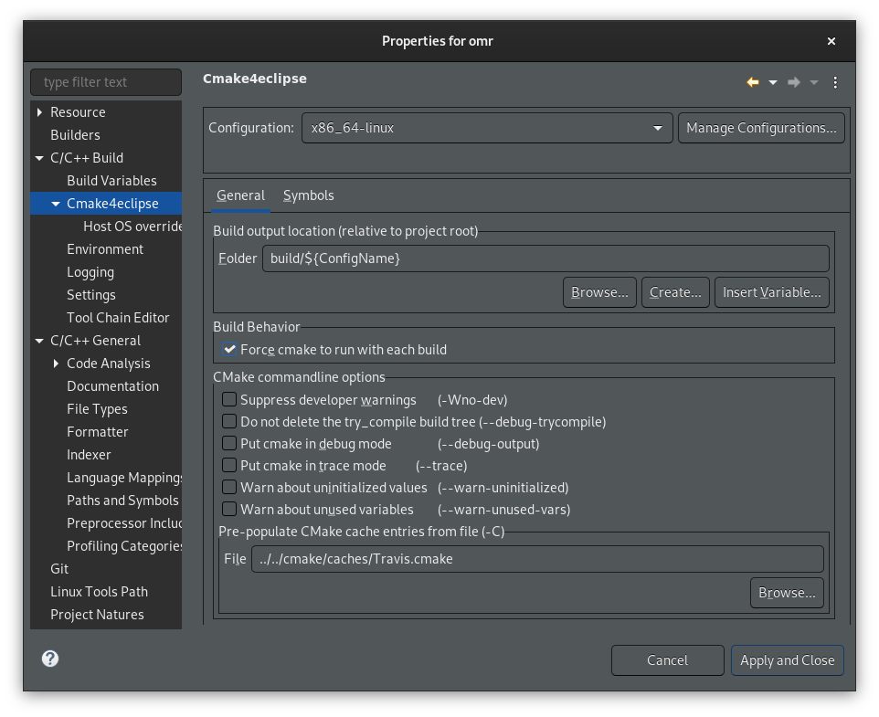
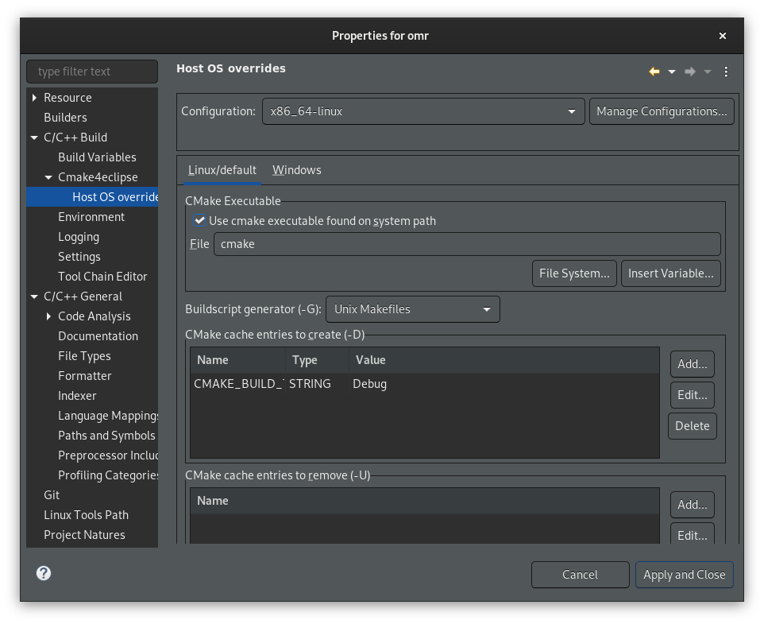
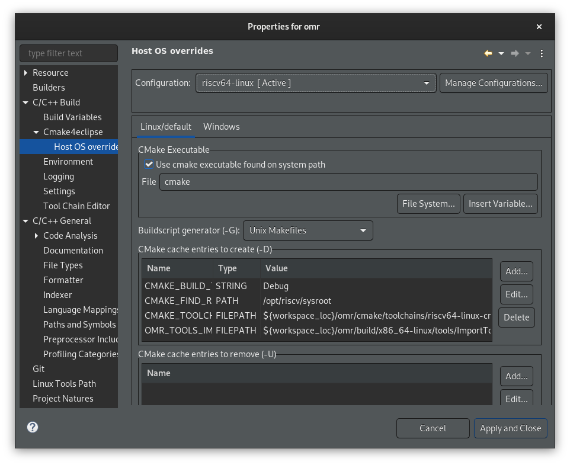
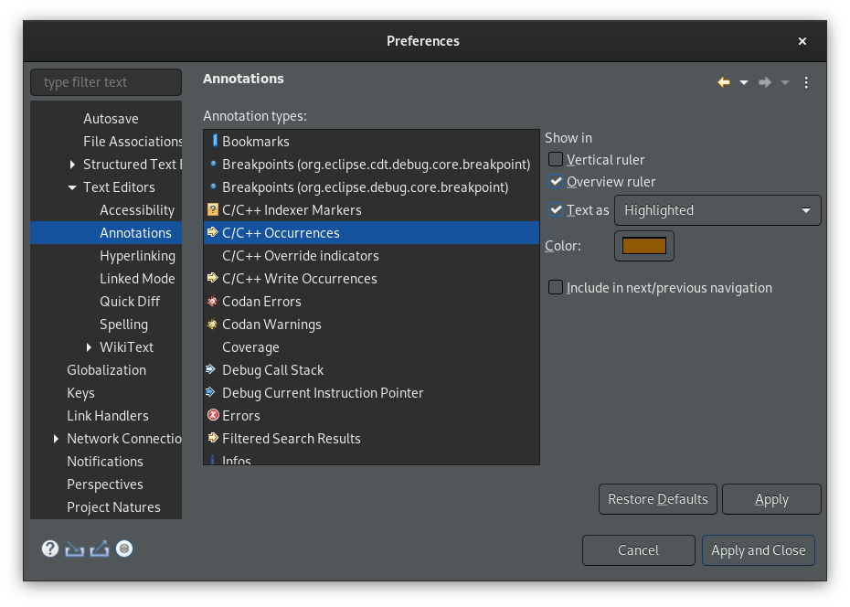
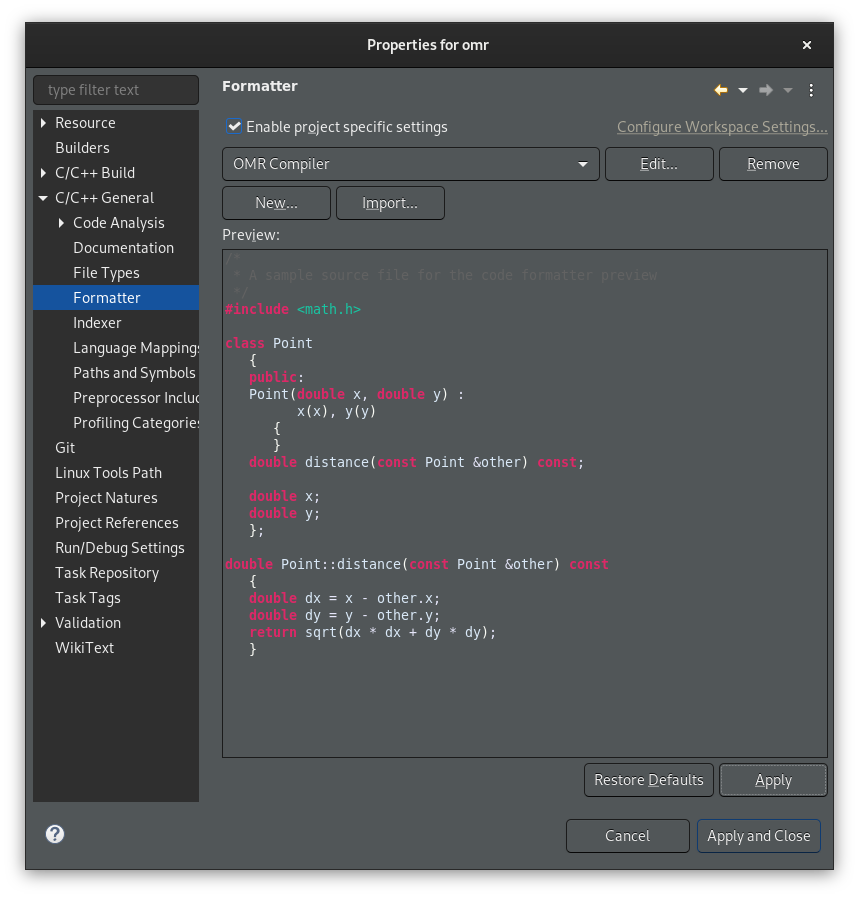

Introduction
Ever since I started to work on OMR compiler codegen for RISC-V, I struggled to setup Eclipse CDT so I can use use it for OMR development. I tried a lot of things, but there was always something missing. The most annoying part was that code indexer did not work very well and that made code assist (code completion) useless.
Quite recently, I did another pass over the setup and found a way that works okay (so far):
- Supports multiple configurations including cross-compilation for different targets (tried only x86-64 and RISC-V),
- building OMR from IDE works and does not interfere with manual building,
- code assist works just fine (in most cases anyway),
- code formatter works and follows OMR compiler coding style (in most cases anyway).
This post contains a step-by-step recipe how to setup Eclipse CDT.
Before we start
Following recipe has been tested on Eclipse CDT 2020-06 with Cmake4eclipse plugin. The easiest way to install the plugin is to from eclipse marketplace right from the IDE.
If you already have some Eclipse project setup files for OMR in your Eclipse workspace (.project, .cproject and .settings), make sure you remove them before trying the following. Otherwise, it may not work because Eclipse will pick parts from old config and you get into all sorts of weird situations. Been there, seen that.
Setting up an Eclipse CDT project
-
Configure CDT indexer to always use active configuration: open workspace preferences (Window ▷ Preferences), select page C/C++ ▷ Indexer and check Use active build configuration.
-
Create new generic project: File ▷ New ▷ Project:
-
In the dialog, select C/C++ ▷ C++ Project.

-
Press Next, fill in a project name and location, select CMake driven ▷ Empty Project as project type and CMake driven as toolchain.

-
Press Finish
WARNING: don’t create project using File ▷ New ▷ C/C++ Project — it is tempting, but that lead anywhere.
-
-
Once a project is created, open project properties (Project ▷ Properties):
-
Select C/C++ Build property page and press Manage Configurations…, in the dialog delete all but one configuration (we will optionally add more later). Rename it to x86_64-linux (obviously, you can choose whatever name you like, I just find this naming usefull since we will then have configurations for cross compiling for different architectures).

-
Select C/C++ Build property page and:
-
In tab Behavior, limit number of parallel jobs to some sensible number. Do not leave it to Use unlimited jobs, it makes the system unusable.

-
-
Select C/C++ Build ▷ Cmake4eclipse property page and:
- Check Force cmake to run with each build
-
Enter
../../cmake/caches/Travis.cmakein Pre-populate CMake cache entries from file. Note, that this path is relative to build directory, hence../...
-
Select C/C++ Build ▷ Cmake4eclipse ▷ Host OS overrides property page and:
-
(Optional) Set
CMAKE_BUILD_TYPEtoDebug
-
Now you should be able to build OMR from Eclipse using menu Project ▷ Build Project. Also, code should be properly indexed, taking all the defines and include paths from CMake.
-
-
(Optional) If you’re working on a compiler (like me), you may want to add a new configuration to cross-build OMR for your favourite architectures. If you set this configuration as active, CDT indexer will pick includes and definitions and even code completions (code assist) works as expected.
Following is setup for RISC-V - you may want to adapt it for other architecture. Open project properties:
- Select C/C++ Build property page and press Manage Configurations…and create new one, copying all settings from the x86_64-linux and (optionally) set it active.
- Select C/C++ Build ▷ Cmake4eclipse ▷ Host OS overrides property page and add:
- Set
OMR_TOOLS_IMPORTFILEto${workspace_loc}/omr/build/x86_64-linux/tools/ImportTools.cmake - Set
CMAKE_TOOLCHAIN_FILEto${workspace_loc}/omr/cmake/toolchains/riscv64-linux-cross.cmake - Set
CMAKE_FIND_ROOT_PATHto/opt/riscv/sysroot(you may need to adapt the value to match your system)

- Set
-
(Optional) If you’re using dark theme (like me), you may want to change the background for “occurences” to something darker than the default. Default is very light, making the text unreadable. To change it, open workspace preferences (Window ▷ Preferences), select page General ▷ Editors ▷ Text Editors ▷ Annotations and then change background of C/C++ Occurences and of C/C++ Write Occurences according to your taste.

-
(Optional) If you’re working on OMR compiler (like me), you may want to change formatter preferences to match OMR compiler formatting style. Open project preferences (Project ▷ Properties), select page C/C++ Build ▷ Formatter and:
- Tick Enable project specific settings
- Import OMR compiler settings from omr_compiler_formatter_settings.xml
